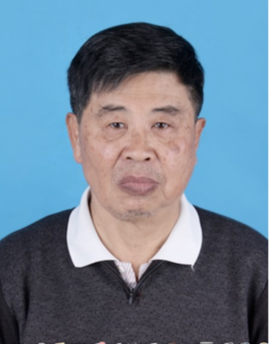
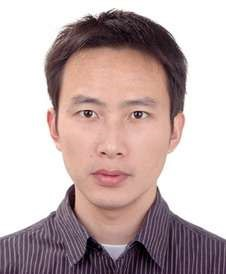

2017年第七届中国业务过程管理大会(CBPM2017)
研究生论坛
CBPM研究生论坛旨在为全国从事业务过程管理工作的研究生及青年学者提供展示其研究成果的机会。本次论坛将邀请相关领域的国内外知名学者及业界人士进行现场点评和指导。
论坛主题
如何找一个好的研究问题？
论坛嘉宾

袁崇义教授 1964年南京大学数学系毕业，入中科院数学所为研究生。1975年开始计算机软件领域的研究工作。1992年调入北大计算机系，教授，博导。2005年退休。
在科学院数学所期间，1977年至1979年先后在加拿大多伦多大学与滑铁卢大学进修计算机•软件两年余。1984年至1990年在德国（波恩）数学研究院（GMD）访问4次共3年余。访问期间在Carl Adam Petri 的研究所学习Petri网。1989年至2013年期间共出版4本Petri网专著，包括2005年电子工业出版社的《Petri网原理与应用》及2013年科学出版社的《Petri网应用》。主要论文有软件学报英文版2007年< A three layer model for business process -- process logic, case semantics and workflow management > 及近几年关于程序语言及形式语义(OESPA)的若干文章。
邓水光，男，1979年生，博士、教授/博士生导师，获微软学者、求是青年学者、百人会英才奖、中国“五四”青年奖章等荣誉称号，入选浙江省151人才工程培养计划，是美国麻省理工学院、斯坦福大学的访问学者。 2002年毕业于浙江大学计算机科学与技术学院获学士学位，同年保送直接攻读博士学位，2007年7月获计算机博士学位并进入浙江大学博士后流动站工作，2009年9月出站后留校任教。目前是全国电子商务质量管理标准化技术委员会委员、中国计算机学会（CCF）高级会员、IEEE Senior Member、CCF服务计算专委会常委、中国人工智能学会知识工程与分布智能专委会青年委员。 主要研究方向为服务计算、流程管理、移动计算。主持多项国家级课题的研发工作，包括国家863计划课题、国家科技支撑计划课题、国家自然科学基金等。近年来，在国际权威期刊和会议上发表SCI/EI论文40余篇，Google Scholar累计引用2080余次，H指数25。授权国家发明专利50余项，出版三部学术专著。学术研究科研成果先后于2007年获教育部科技进步一等奖、2008年获浙江省科技进步一等奖、2010年获国家科技进步二等奖、2014年获浙江省科技进步一等奖。

宋巍，博士，南京理工大学计算机科学与工程学院副教授，硕士生导师，曾担任CCF YOCSEF南京分论坛副主席、AC委员。毕业于南京大学计算机软件研究所，曾在香港科技大学、慕尼黑工业大学进行访问，主要从事软件工程与方法学、服务计算、过程挖掘等方面的研究。2016年8月受邀参加达堡论坛(Schloss Dagstuhl)研讨会“Integrating Process-Oriented and Event-Based Systems”。曾承担国家自然科学基金、教育部博士点基金、江苏省自然科学基金等课题，在TSC, TPDS、STVR等国内外知名期刊与ASE、ICWS等知名国际会议上共发表论文40余篇。